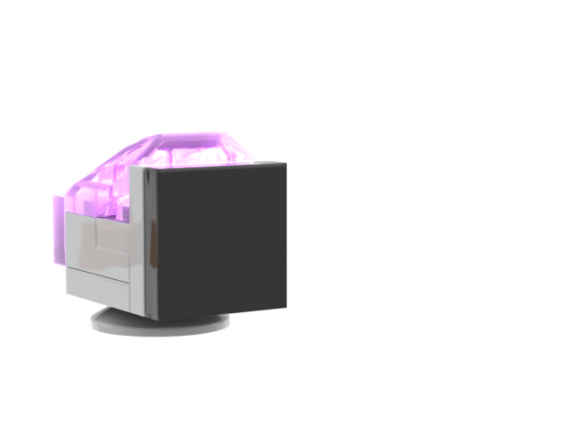

Maple Valley
was created by diego gomez, also known as dgsquared.
maple valley is named after the elementary school where i attended kindergarten. this is where i was first exposed to computers and the internet. it's all kind of hazy, but i wanted to channel my early exploration of the net through learning games and google maps street view. i vividly remember a learning game about the myth of icarus (a story that i may have been a little young for) so i had to channel its spirit here.
esc